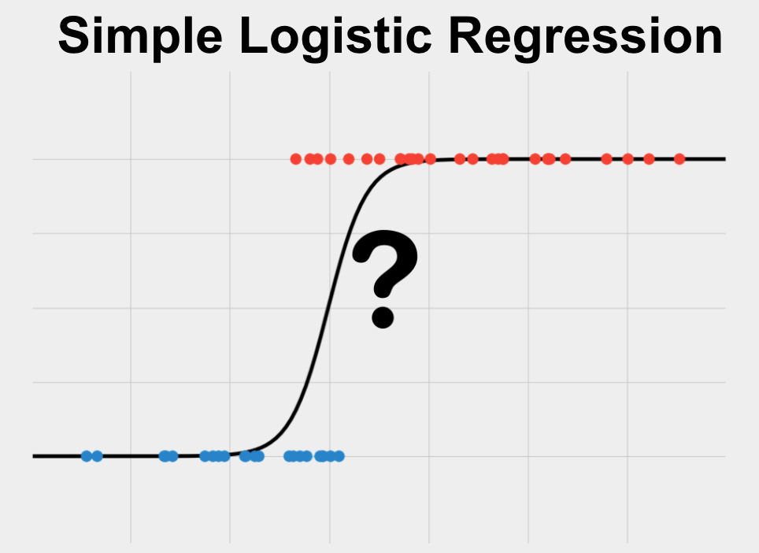

This tutorial was prepared for a light overview of R, some of its capabilities, and what machine learning looks like using the {glm} and {caret} packages. It is assumed that you have some knowledge of programming concepts, maybe some statistics, but not necessarily any experience with R or ML.
Introduction
R is an integrated suite of software facilities built by statisticians used for
-
data manipulation
-
calculation
-
graphics
-
data handling and storage
-
operations on arrays, matrices
At its beginning, R was designed for stats, but now its a fully-fledged programming language. Some other features of R:
-
a large integrated collection of intermediate tools for data analysis
-
a well-developed, simple and effective programming language (called
S) which includes: -
conditionals
-
loops
-
user defined recursive functions
-
input and output facilities
R comes with a lot of bells and whistles built in, but one of the things I like most about it is the wealth of add-ons that are out there. Some extensions of R that people commonly use:
-
RStudio (a development environment)
-
RMarkdown (markdown for R)
-
Popular packages (dplyr, ggplot)
-
and more packages (github, BioConductor)
-
whole package ecosystems (tidyverse)
-
applications (shiny)
-
presentations
-
and more!
For data science, R and python are the most widely used languages. There are many similarities between the two. Developers can even combine the strengths of both languages to do better data science.
R Basics
In most people’s opinion, there are really two kinds of R:
-
The more basic that comes installed with R (base R)
-
and the tidyverse.
In most cases, base R works just fine, but the tidyverse supplies a bunch of other functions (sometimes called verbs) that are designed to make it easier to write and edit code.
To grasp some of the basic principles in R, we’ll fist use base R, and then demonstrate some of the capabilities of the tidyverse.
If you don’t have R and Rstudio downloaded yet, you can follow this tutorial.
Creating Objects
(Using Base R)
First we’ll create a 1-dimensional object. Most things stored in R can be thought of as different types of objects. Objects can have many characteristics or properties. Objects can be very large, such as a big image, very small, such as a single number, have many dimensions such as in genetic data, or few dimensions like an excel spreadsheet. Each object has its own unique set of characteristics, some are pre-defined and some can be created by the user. Here is a simple type of object, a vector (similar to an array if you’re familiar with those). This code tells R to store the vector with 3 numbers in an object called “vector1”.
vector1 <- c(1, 2, 3)
Now this vector is stored in R. We can “call” the object by just typing out the name.
vector1
## [1] 1 2 3
This is different than printing out the object. Although it might look the same, printing is only used for the purpose of seeing stuff. “Calling” an object means that you want to interact with it.
One of the characteristics of any object in R is it’s class. We can get the class by applying the function class(). Functions are really important in programming. The define a set of operations that are performed on whatever is inside the function. Here, R is telling us that it recognizes the elements of “vector1” as numeric.
print(vector1)
## [1] 1 2 3
class(vector1)
## [1] "numeric"
Indexing
Now that we have this object “vector1”, we can view different parts of it. A vector is what is known as a on-dimensional object. If you think about a vector like an spreadsheet, a vector would only be stored across one axis, either in a row or a column, hence the term one-dimensional. To view a certain part of (most) one-dimensional objects, we do what’s called indexing. Indexing identifies each element as having a order in the vector that doesn’t change unless we want it to
To get the first element of this vector, we can call the object, and then index the first element like so:
vector1[1]
## [1] 1
What if we want the last two elements?
vector1[2,3]
## Error in vector1[2, 3]: incorrect number of dimensions
The comma inside the brackets tells R to start looking in another dimension. Since this is a one-dimensional object, this fails. To get the last two elements, we have to pass their indexes as another vector!
vector1[c(2,3)]
## [1] 2 3
Lists
Another type of object is called a list. These are preferred when you want to name each element. While vectors must have elements of all the same class, lists can hold anything, even other objects! You should always use names if possible, but you don’t even have to name every element.
list1 <- c(crowd = "a", b = 12, vector1)
When we created the list, R automatically separated “vector1” into each element.
list1
## crowd b
## "a" "12" "1" "2" "3"
Lets grab the second element and add a number.
list1[2] + 12
## Error in list1[2] + 12: non-numeric argument to binary operator
Before we do an operation, we need to make sure R recognizes everything as a number. To do that, we need to apply a function to our object to make it of numeric class.
as.numeric(list1[2]) + 12
## [1] 24
That’s better. There are lots of conversion functions:
-
as.character() -
as.numeric() -
as.factor() -
and a few others
Factors
Factors are a type of object that takes elements and stores them in levels: unique values from all the elements. That means that if a value shows up multiple times in a vector, it is stored as an index to another vector that stores all the unique values.
factor1 <- factor(c(1, 4, 3, 6, 6, 0, 3, 9, 1))
# When we call a factor, we can see all its data and its levels
factor1
## [1] 1 4 3 6 6 0 3 9 1
## Levels: 0 1 3 4 6 9
class(factor1)
## [1] "factor"
Matrices
Now let’s look at two-dimensional objects. The types that are most essential are matrices and data frames. A matrix is a simple table of stuff. Here we use the function rnorm() to generate data for our matrix.
# ncol specifies how to separate the vectors
matrix1 <- matrix(data = c(rnorm(5, 4), rnorm(5, 7)), ncol = 2)
matrix1
## [,1] [,2]
## [1,] 2.695641 7.274793
## [2,] 2.893987 6.858376
## [3,] 3.414308 6.869655
## [4,] 4.911392 7.511038
## [5,] 2.860796 5.048496
To index this class of object, the column names and row names give us a pretty good idea. To get a specific element, index the row then column.
matrix1[3,1]
## [1] 3.414308
Matrices can also be indexed as one-dimensional by supplying one index. The columns wrap to the next one.
matrix1[6]
## [1] 7.274793
matrix1[1,2]
## [1] 7.274793
To get a full row or column, just leave the other dimension blank.
matrix1[1,]
## [1] 2.695641 7.274793
Data Frames
These are the bread and butter of data analytics. They are very similar to a matrix or data table, except they have extra rules. Here we create a data frame (df for short) with two named columns (like a list!)
dataframe1 <- data.frame(col1 = c(matrix1, 78, 44), col2 = 1:12)
class(dataframe1)
## [1] "data.frame"
dataframe1
## col1 col2
## 1 2.695641 1
## 2 2.893987 2
## 3 3.414308 3
## 4 4.911392 4
## 5 2.860796 5
## 6 7.274793 6
## 7 6.858376 7
## 8 6.869655 8
## 9 7.511038 9
## 10 5.048496 10
## 11 78.000000 11
## 12 44.000000 12
Indexing these named columns is super easy with the “$” operator. This returns a vector.
dataframe1$col1
## [1] 2.695641 2.893987 3.414308 4.911392 2.860796 7.274793 6.858376
## [8] 6.869655 7.511038 5.048496 78.000000 44.000000
You can also index like you do with matrices, but since it’s a dataframe, the first method is preferred.
dataframe1[,1]
## [1] 2.695641 2.893987 3.414308 4.911392 2.860796 7.274793 6.858376
## [8] 6.869655 7.511038 5.048496 78.000000 44.000000
Conditional Indexing
Now is a good time to talk about indexing an object by using a conditional representation of that object. That is, take a subset of the data based on the data itself. First we need to express a conditional using the “==” operator. This will tell us if objects in a vector are equal to the other side. For example, we can get R to tell us if each element is greater than 4.
greater_than_1 <- dataframe1$col1 > 4
greater_than_1
## [1] FALSE FALSE FALSE TRUE FALSE TRUE TRUE TRUE TRUE TRUE TRUE TRUE
Here, we receive a vector of boolean (True or False) values. We can use this vector to index the original vector. So we only receive elements from col1 where greater_than_1 is equal to True.
dataframe1$col1
## [1] 2.695641 2.893987 3.414308 4.911392 2.860796 7.274793 6.858376
## [8] 6.869655 7.511038 5.048496 78.000000 44.000000
dataframe1$col1[greater_than_1]
## [1] 4.911392 7.274793 6.858376 6.869655 7.511038 5.048496 78.000000
## [8] 44.000000
This is an extremely powerful tool in base R. You can also create other conditionals with:
-
“>=”
-
“<=”
-
or “!=”
Base R vs. tidyverse
Now lets get to the cool stuff. We are gonna pick up the pace a little bit.
You can manipulate and clean data frames in R very easily, and the tidyverse makes this quite intuitive. Base R handles elementary operations very well, but its in the higher order operations like data cleaning, manipulation, modeling, and graphics that the tidyverse shines.
Though a built-in package, we can import standard datasets as an object in our R session with ease. We don’t have to assign the data as an object, R will do this for us.
data("mtcars")
class(mtcars)
## [1] "data.frame"
Lets get some information about this data we just pulled using the head() function, which will show us the first few rows.
head(mtcars)
## mpg cyl disp hp drat wt qsec vs am gear carb
## Mazda RX4 21.0 6 160 110 3.90 2.620 16.46 0 1 4 4
## Mazda RX4 Wag 21.0 6 160 110 3.90 2.875 17.02 0 1 4 4
## Datsun 710 22.8 4 108 93 3.85 2.320 18.61 1 1 4 1
## Hornet 4 Drive 21.4 6 258 110 3.08 3.215 19.44 1 0 3 1
## Hornet Sportabout 18.7 8 360 175 3.15 3.440 17.02 0 0 3 2
## Valiant 18.1 6 225 105 2.76 3.460 20.22 1 0 3 1
Here we see what we are working with. Take note of some of the column names, what kinds of values each column seems to take, and the row names as well.
Since mtcars is a dataframe, we can look at the “mpg” column using the “$” operator. We want to know the mean mpg of all the cars in this data using the mean() function
mean(mtcars$mpg)
## [1] 20.09062
Data Manipulation
Just like that. Now we’ll do a slightly more complex series of calculations using base R and the tidyverse
Base R
We can get the mean of the whole dataset, but often its more useful if we can take parts of the dataset and compare them. The mean mpg of certain categories can start to give information on how the category might affect the mpg.
Lets look at the mean mpg of cars with 4 cylinders vs 6 cylinders. We’ll do this two ways in base R.
First, the slower way. Index each group by the number of cylinders and. In English, this reads:
“Take the mean mpg where the number of cylinders is equal to 4”
mean(mtcars$mpg[mtcars$cyl == 4])
## [1] 26.66364
And for 6 cylinders
mean(mtcars$mpg[mtcars$cyl == 6])
## [1] 19.74286
Second, we can use a fancy function called tapply() which can apply a function to a column based on the groups in another vector.
tapply(mtcars$mpg, mtcars$cyl, mean)
## 4 6 8
## 26.66364 19.74286 15.10000
What if we do another calculation using just two of the columns, disp and wt?
Lets get the average displacement to weight ratio of all the cars.
# Make a new object with all rows of the two columns named "disp" and "wt"
mycols <- mtcars[, c("disp", "wt")]
# Divide displacement by weight for each car and take the mean
mean(mycols$disp / mycols$wt)
## [1] 67.77537
tidyverse
We can get the mean of the whole dataset, but often its more useful if we can take parts of the dataset and compare them. The mean mpg of certain categories can start to give information on how the category might affect the mpg.
First, we need to introduce %>%, called the ‘pipe’ operator in the tidyverse. This is used to connect two pieces of code together, where the output of the code on the left is used as the input of the code on the right. This was created to prevent people from using nested functions.
For example:
library(tidyverse)
## -- Attaching packages --------------------------------------- tidyverse 1.3.2 --
## v tibble 3.1.8 v dplyr 1.0.10
## v tidyr 1.2.1 v stringr 1.5.0
## v readr 2.1.3 v forcats 0.5.2
## v purrr 0.3.5
## -- Conflicts ------------------------------------------ tidyverse_conflicts() --
## x dplyr::filter() masks stats::filter()
## x dplyr::lag() masks stats::lag()
class(mtcars)
## [1] "data.frame"
is the same as
mtcars %>%
class()
## [1] "data.frame"
One more thing to know about the tidyverse is that it utilizes lazy evaluation and data masking. This sounds fancy, but all it really means is that once we pass data to a tidyverse function, we don’t have to call the data anymore, just the column that we are interested in. No more data$column! That’s good for us because that’s less typing and faster analysis.
Okay, lets look at the mean mpg of cars with 4 cylinders vs 6 cylinders. To use the tidyverse, we can make use of its built-in functions that can tackle this exact problem.
mtcars %>%
# Here we take the data "mtcars" and use the "group_by()" function to group the data by the cyl value
# The group is 'hidden' within the function, but have faith its there
group_by(cyl) %>%
# Now we tell R to use the grouped df to take the mean of "mpg" based on each "cyl" group,
# independently of one another
# Lastly we just create a new column for the mean.
# We can easily create new columns inside "summarise()" and "mutate()" with the "=" operator
summarise(mean_mpg = mean(mpg))
## # A tibble: 3 x 2
## cyl mean_mpg
## <dbl> <dbl>
## 1 4 26.7
## 2 6 19.7
## 3 8 15.1
Without the pipe operator, that code would look like this:
summarise(group_by(mtcars, cyl), mean_mpg = mean(mpg))
## # A tibble: 3 x 2
## cyl mean_mpg
## <dbl> <dbl>
## 1 4 26.7
## 2 6 19.7
## 3 8 15.1
Not terrible, but with longs chains it can get messy fast, and we couldn’t easily add comments between code.
What if we do another calculation using just two of the columns, disp and wt?
Lets get the average displacement to weight ratio of all the cars.
# We can do this really fast!
mtcars %>%
summarise(avg_ratio = mean(disp/wt))
## avg_ratio
## 1 67.77537
The tidyverse is home to other methods as well:
-
The pipe operator and others from {magrittr} %>%
-
Plotting methods from {ggplot2}
-
and other improved read/write, string, and object type abilities
Visualization
Plotting data is really important for analysis. Both base R and the tidyverse have pretty robust graphics capabilities. Here are the basics.
Base R
The most basic type of plot is the scatter plot. This takes values from one column and values from another to put the points on a two-dimensional coordinate plane. Right out of the box, base R plots look fine.
Simple plots are pretty easy in base R. Call the plot() function and put in two same-sized vectors. Here we can make sure that the plot() function puts each object where we want by specifying them with a keyword. These keyword symbolize function arguments. Most functions take arguments, and its usually good to specify them with a keyword. In this case, we are telling R to use horsepower on the x axis and mpg on the y axis. We can supply our own labels too.
plot(x = mtcars$hp, mtcars$mpg, xlab = "Horsepower", ylab = "MPG")

We can make a histogram too. hist() only takes one data argument and automatically counts each group. Although its the more basic of the two methods, plotting in Base R can look quite nice.
# "par()" is a function that adds some extra pizzazz to plots
par(mar = c(3, 3, 2, 1), # margins
las = 1, # Y axis text rotated
xaxs = "i", yaxs = "i") # Remove plot padding
barplot(tapply(mtcars$mpg, mtcars$cyl, length),
col = unique(mtcars$cyl), # Fill color
xlab = "Cylinders", ylab = "Count", # x and y labels
xlim = c(0, 4), ylim = c(0, 20)) # Limits
title("Cylinders of mtcars",
adj = 0.2, # adjust location of the x axis
cex.main = 1.5, font.main = 1, # font size and type
col.main = "black")

tidyverse
The package responsible for handling most graphics in the tidyverse is called ggplot2. ggplot2 uses a layering system to build a graph, where each layer supplies information that is just laid on top of the information that came previously. There are a few quirks to this package in terms of where and how you supply data and the language, but its easy to adjust to.
# ggplot is in the tidyverse so it uses data masking and lazy evaluation
# We can supply the data when we initialize a plot, with "ggplot()"
ggplot(mtcars) +
# Then we create a geometry layer of points
# And supply aesthetics inside "aes()" where we can specify which columns are on the x axis and the y axis
geom_point(aes(x = hp, y = mpg))

We can make a barplot too.
ggplot(mtcars) + geom_bar(aes(x = cyl, fill = factor(cyl)), stat = 'count') +
# Change the colors of the bars
scale_fill_manual(values = c("green", "darkgreen", "grey")) +
# We can rename the axes here with the "labs()" function
labs(x = "Cylinders",
y = "Count",
title = "Histogram of Cylinders") +
# Since the default ggplot theme is bare-bones, I usually throw on a better one
# I'm using a custom theme similar to theme_classic(), but modified for this website
my_theme()

Data visualization is really important for the analyst to figure out what’s going on and to ensure that the information is accurately communicated to others. There are lots of industry-leading tools besides R that use can use to visualize data. More info about one of these tools can be found on the Tableau website.
Also, to learn how I created this custom theme, check out this tutorial by Maddie Pickens on RPubs.
Machine Learning
There are two main classes of ML:

- Classification
-
Predicts discrete classes
-
The model can find parameters that minimize the prediction of incorrect category labels (Decision Boundary)
-
- Regression
-
Line of best fit
-
Predicts a continuous variable
-
It’s the model’s job to find parameters that minimize the distance between the line and the observed data
-
In its simplest form, and the form you will see in this tutorial, are 2 steps to Machine Learning
First, we get a framework to create a model. Broadly, a model is an object that contains a relationship between a sequence of inputs and outputs. The relationship can be extremely simple, such as in a linear model with two parameters, where the output has a direct linear relationship to the input, or extremely complex such as in a neural network with many parameters, where the output has an indirect non-linear relationship to the input. Typically, creating or “training” a model means establishing a relationship that best describes the output. Using an existing framework, you tell the program to create a relationship. Typically the relationship is restructured many times based on how well the output is described. Once it does a good-enough job, it stops.
Once the model is trained and a relationship is established, then we can give it new input and receive an expected output. There are many considerations, evaluations, and tests that should be made along the way, but the model should be generalization enough to produce insight into data not available for standard data analysis.
Using real data, lets see what ML looks like in R. I’ll be using a combination of the tidyverse and base R for this, and I won’t delve too deep into the exact methods I’m using.
We’ll go through some of the steps of creating a model:
- Cleaning up the data
- Visualizing relationships
- Training models
- Model evaluation
We will use Fitbit Data, courtesy of Gloria on Kaggle.
Case 1: Linear Regression
For this exercise, we want to look at the relationship between the number of calories burned Calories and the distance that people traveled according to the device TrackerDistance.
# Read in the csv with "read_csv()" from the tidyverse
# Specify the path
fitbit <- read_csv("data/Daily_Activity_2022_27_02.csv")
## New names:
## Rows: 940 Columns: 18
## -- Column specification
## -------------------------------------------------------- Delimiter: "," chr
## (3): ActivityDate, ActivityDay, ...18 dbl (14): Id, TotalSteps, TotalDistance,
## TrackerDistance, LoggedActivitiesDi... lgl (1): ...17
## i Use `spec()` to retrieve the full column specification for this data. i
## Specify the column types or set `show_col_types = FALSE` to quiet this message.
## * `` -> `...17`
## * `` -> `...18`
# We can see all the classes of each column, very helpful!
Exploring the data is pretty much always the first step.
# view the data with "glimpse()" from tidyverse
glimpse(fitbit)
## Rows: 940
## Columns: 18
## $ Id <dbl> 1503960366, 1503960366, 1503960366, 150396036~
## $ ActivityDate <chr> "4/12/2016", "4/13/2016", "4/14/2016", "4/15/~
## $ ActivityDay <chr> "Tue", "Wed", "Thu", "Fri", "Sat", "Sun", "Mo~
## $ TotalSteps <dbl> 13162, 10735, 10460, 9762, 12669, 9705, 13019~
## $ TotalDistance <dbl> 8.50, 6.97, 6.74, 6.28, 8.16, 6.48, 8.59, 9.8~
## $ TrackerDistance <dbl> 8.50, 6.97, 6.74, 6.28, 8.16, 6.48, 8.59, 9.8~
## $ LoggedActivitiesDistance <dbl> 0, 0, 0, 0, 0, 0, 0, 0, 0, 0, 0, 0, 0, 0, 0, ~
## $ VeryActiveDistance <dbl> 1.88, 1.57, 2.44, 2.14, 2.71, 3.19, 3.25, 3.5~
## $ ModeratelyActiveDistance <dbl> 0.55, 0.69, 0.40, 1.26, 0.41, 0.78, 0.64, 1.3~
## $ LightActiveDistance <dbl> 6.06, 4.71, 3.91, 2.83, 5.04, 2.51, 4.71, 5.0~
## $ SedentaryActiveDistance <dbl> 0, 0, 0, 0, 0, 0, 0, 0, 0, 0, 0, 0, 0, 0, 0, ~
## $ VeryActiveMinutes <dbl> 25, 21, 30, 29, 36, 38, 42, 50, 28, 19, 66, 4~
## $ FairlyActiveMinutes <dbl> 13, 19, 11, 34, 10, 20, 16, 31, 12, 8, 27, 21~
## $ LightlyActiveMinutes <dbl> 328, 217, 181, 209, 221, 164, 233, 264, 205, ~
## $ SedentaryMinutes <dbl> 728, 776, 1218, 726, 773, 539, 1149, 775, 818~
## $ Calories <dbl> 1985, 1797, 1776, 1745, 1863, 1728, 1921, 203~
## $ ...17 <lgl> NA, NA, NA, NA, NA, NA, NA, NA, NA, NA, NA, N~
## $ ...18 <chr> "Tue", "Wed", "Thu", "Fri", "Sat", "Sun", "Mo~
Let’s see what our variables of interest look like.
# plot our variables of interest
plot(fitbit$TrackerDistance, fitbit$Calories, xlab = "Distance", ylab = "Calories")

Linear Model
We will create the simplest model first. This is a good idea just so we have room to improve from here.
We can use the glm() function to make a linear model. We supply the data and columns to use data masking. The “~” notation is a part of the relationship/function. In English, this is:
“
Caloriesas a function ofTrackerDistance”
lmodel <- glm(Calories ~ TrackerDistance, data = fitbit)
Now that we have a model, we can view some information about it. This model is linear (we used glm()) and is using only one column to predict Calories.
# View a summary of the model
summary(lmodel)
##
## Call:
## glm(formula = Calories ~ TrackerDistance, data = fitbit)
##
## Deviance Residuals:
## Min 1Q Median 3Q Max
## -2288.82 -334.78 -63.34 409.82 1813.73
##
## Coefficients:
## Estimate Std. Error t value Pr(>|t|)
## (Intercept) 1654.177 30.833 53.65 <2e-16 ***
## TrackerDistance 118.610 4.585 25.87 <2e-16 ***
## ---
## Signif. codes: 0 '***' 0.001 '**' 0.01 '*' 0.05 '.' 0.1 ' ' 1
##
## (Dispersion parameter for gaussian family taken to be 301305.5)
##
## Null deviance: 484302060 on 939 degrees of freedom
## Residual deviance: 282624514 on 938 degrees of freedom
## AIC: 14531
##
## Number of Fisher Scoring iterations: 2
From this summary, we need to look at the coefficients to get an idea of what our model did, and review some statistics to evaluate it.
This model created a linear relationship or linear function between the input and output. This means that the function we should expect to see will be in the form of \(mx + b\) (the function of a line) where x is TrackerDistance. Our model says that Calories can be best estimated by:
118.610 ×
TrackerDistance+ 1654.77
Let’s see what this looks like on a graph.
ggplot(data = fitbit) +
geom_point(aes(x = TrackerDistance, y = Calories)) +
# Create a line with slope and intercept
geom_abline(slope = 118.610, intercept = 1654.77, color = "red", linewidth = 3) +
# Add title and model call
labs(title = "Linear Regression with Fitbit Data",
subtitle = lmodel$call) +
# Add a better theme
my_theme()

How many calories would we expect someone to burn if they ran 40 miles?
We could just plug the slope and intercept into an equation, but lets use R’s predict() function for this. Since we just need one prediction, we can pass one value as a named list. Using the model, we supply this new data and specify that we want the type of prediction to be on the scale of the response variable.
pred <- predict(lmodel, newdata = list(TrackerDistance = 40), type = "response")
pred
## 1
## 6398.584
Based on the model, we should expect someone who ran 40 km to burn 6398 calories.
Polynomial Model
A linear model describes the relationship between the input and output with a linear function, but the relationship might be more complex than that. Lets try a different model.
Here we will use a polynomial model. This kind of model is a cousin of the linear model. Instead of a linear function, this model optimizes a polynomial function of TrackerDistance.
pmodel <- glm(Calories ~ poly(`TrackerDistance`, 3), data = fitbit)
# View summary
summary(pmodel)
##
## Call:
## glm(formula = Calories ~ poly(TrackerDistance, 3), data = fitbit)
##
## Deviance Residuals:
## Min 1Q Median 3Q Max
## -1637.82 -324.84 -78.52 422.57 1764.06
##
## Coefficients:
## Estimate Std. Error t value Pr(>|t|)
## (Intercept) 2303.61 17.78 129.568 < 2e-16 ***
## poly(TrackerDistance, 3)1 14201.32 545.10 26.053 < 2e-16 ***
## poly(TrackerDistance, 3)2 -1688.80 545.10 -3.098 0.00201 **
## poly(TrackerDistance, 3)3 -1286.74 545.10 -2.361 0.01845 *
## ---
## Signif. codes: 0 '***' 0.001 '**' 0.01 '*' 0.05 '.' 0.1 ' ' 1
##
## (Dispersion parameter for gaussian family taken to be 297133.3)
##
## Null deviance: 484302060 on 939 degrees of freedom
## Residual deviance: 278116782 on 936 degrees of freedom
## AIC: 14519
##
## Number of Fisher Scoring iterations: 2
Here are the coefficients of a polynomial relationship between Calories and TrackerDistance. According to the model:
Calories= -1286.74 ×TrackerDistance³ + -1688.80 ×TrackerDistance² + 14201.32 ×TrackerDistance+ 2303.61
When coefficients are calculated, we can get an estimate of how likely they are to exist as a predictor of the output. The colloquial threshold for this is 0.05. All of the relationships show a significance ( Pr(>|t|) ) below this threshold.
Let’s plot both models together.
# We need to get line data for the polynomial model so we just use the existing data
pred <- predict(pmodel, newdata = fitbit, type = "response")
# Plot both models
ggplot(data = fitbit) +
geom_point(aes(x = `TrackerDistance`, y = Calories)) +
geom_abline(slope = 118.610, intercept = 1654.77, color = "red", linewidth = 3) +
geom_line(aes(x = `TrackerDistance`, y = pred), color = "blue", linewidth = 3) +
# Add title and model call
labs(title = "Linear and Polynomial Regression with Fitbit Data") +
# Add a better theme
my_theme()

The polynomial model in blue seems to follow the linear model exactly until we reach a TrackerDistance of about 18. Then, it bends toward three points that are on the edge of the data.
If we look at the model’s trajectory, it suggests that someone who runs 30 km will actually burn fewer calories than someone who runs 20 km. Without comparing fit or residuals, we can conclude that the first linear model is probably better suited to represent the data and will more accurately represent the relationship between Calories and TrackerDistance beyond the scope of the data.
Case 2: Logistic Regression

Even though regression is in the name, it is used for binary classification (TRUE/FALSE, white/black etc.). This model estimates the parameters of a logit function for the probability of an observation residing in a particular class.
In this example, we want to predict high or low calorie count using the amount of time each participant spent in each activity state. Before we make a model, we have to “engineer” the data a little bit to make the model work. Since the data doesn’t come with a binary categorical column, we can make one using Calories.
# Set a high/low threshold for calories: 2000
# Use "mutate()" from the tidyverse
fit_new <- mutate(fitbit, dvcal = ifelse(Calories >= 2000, "high", "low"))
# View our new column in a plot
ggplot(fit_new) +
geom_histogram(aes(x = dvcal, fill = dvcal), stat = "count") +
labs(title = "Histogram of dvcal") +
my_theme()
## Warning in geom_histogram(aes(x = dvcal, fill = dvcal), stat = "count"):
## Ignoring unknown parameters: `binwidth`, `bins`, and `pad`

To create this model, we can use glm() again, but this time set the family argument to “binomial”.
# create the model
y <- as.factor(fit_new$dvcal)
logmodel <- glm(formula = y ~ SedentaryMinutes + LightlyActiveMinutes +
FairlyActiveMinutes + VeryActiveMinutes,
data = fit_new,
family = "binomial")
summary(logmodel)
##
## Call:
## glm(formula = y ~ SedentaryMinutes + LightlyActiveMinutes + FairlyActiveMinutes +
## VeryActiveMinutes, family = "binomial", data = fit_new)
##
## Deviance Residuals:
## Min 1Q Median 3Q Max
## -1.7327 -0.9297 -0.4144 0.9938 2.1461
##
## Coefficients:
## Estimate Std. Error z value Pr(>|z|)
## (Intercept) 2.2525224 0.4141237 5.439 5.35e-08 ***
## SedentaryMinutes -0.0009139 0.0002941 -3.107 0.00189 **
## LightlyActiveMinutes -0.0060521 0.0008028 -7.538 4.76e-14 ***
## FairlyActiveMinutes -0.0044428 0.0039916 -1.113 0.26569
## VeryActiveMinutes -0.0368339 0.0042573 -8.652 < 2e-16 ***
## ---
## Signif. codes: 0 '***' 0.001 '**' 0.01 '*' 0.05 '.' 0.1 ' ' 1
##
## (Dispersion parameter for binomial family taken to be 1)
##
## Null deviance: 1259.4 on 939 degrees of freedom
## Residual deviance: 1037.9 on 935 degrees of freedom
## AIC: 1047.9
##
## Number of Fisher Scoring iterations: 5
Each coefficient generated by the model comes with a significance score. This is a measure of how likely it is that the relationship between the predictor and response variable is zero. A low score means that the model detected a significant relationship, denotes by one, two, or three asterisks. Looking at the coefficients,FairlyActiveMinutes doesn’t seem to be statistically significant. Let’s evaluate the model to see if removing it will help the model perform better.
# Retrieve a list of predicted values
pred <- predict(logmodel, newdata = fit_new, type = "response")
Evaluating models is an important part of ML. This not only tells you which model “works best”, but can also give you information on areas where the model can improve. Since we are working with a classification model, we can use a “confusion matrix” that tells us how many times the correctly and incorrectly predicted a class.
# Create confusion matrix
# We need to round the predicted values to be 0 or 1
cmat <- as.matrix(table(Actual_Values = y, Predicted_Values = round(pred)))
cmat
## Predicted_Values
## Actual_Values 0 1
## high 454 117
## low 172 197
The model correctly predicted high values 454 times and correctly predicted low values 197 times. When the calorie class was “low”, the model incorrectly predicted “high” 172 times, and when the calorie count was “high”, the model incorrectly predicted “low” 117 times.
To get a better idea of overall performance, we can use a metric called “Accuracy”. This is defined as the number of times the model guessed correctly divided by the total number of guesses.
# Get accuracy
sum(diag(cmat))/sum(cmat)
## [1] 0.6925532
The model guessed right about 69% of the time. Lets remove FairlyActiveMinutes and see how the model performs.
# Create model without FairlyActiveMinutes
logmodel2 <- glm(formula = y ~ SedentaryMinutes + LightlyActiveMinutes + VeryActiveMinutes,
data = fit_new,
family = "binomial")
# Retrieve a list of predicted values
pred <- predict(logmodel2, newdata = fit_new, type = "response")
# Create confusion matrix
cmat <- as.matrix(table(Actual_Values = y, Predicted_Values = round(pred)))
# Get accuracy
sum(diag(cmat))/sum(cmat)
## [1] 0.7
The model without FairlyActiveMinutes achieved a slightly better accuracy than the model with it. Since we achieved a better accuracy with a simpler model, it is the clear winner. In ML, simple is almost always better. Read on to learn why.
Case 3: Random Forest
A random forest is an extension of the decision tree class of models, which are usually used for classification problems. A decision tree is a model that divides each feature into two groups that correspond to an output, where the size of each group and which features are chosen is optimized. A random forest creates dozens of unique decision trees and combines the outputs of each tree into a final estimation, a technique called ensemble modeling. Each tree comes up with a guess, and the model tally’s up “votes” from each tree to produce a final guess.
Random forests are a higher class of ML model, and may be a little to complex for this problem we are working on. They are very powerful for classification, but they can be used for regression too.
An common issue with more complex ML models is the loss of interpretability. This means that at the end of the modeling process, even though the model may be more accurate, we can’t always define an expression that directly relates the input and output. This is especially true for a random forest, because under the hood, its a lot of little models deciding for themselves what the relationship should be. This conflict between model complexity and accuracy is a big issue in ML. Check out this towardsdatascience.com article to join the conversation.
To get started with random forest, we need to load a package.
library(caret)
library(randomForest)
Lets try using a random forest to predict the calorie class of each workout session in the fitbit data.
First, since a random forest considers all the features, we will need to remove some that contain duplicate information or no information.
data <- fit_new %>%
dplyr::select(-Id, -ActivityDate, -Calories, -`...17`, -`...18`)
The caret package has some neat tools to help us run our model. We also need to pick a hyper-parameter: mtry. A hyper-parameter is a term used in higher-order ML models that dictates something about the structure of the model being trained. What we pass as a value formtry will tell the model how many predictors it should select to be in each tree. Normally we would use cross-validation to test different values for this hyper-parameter, but we will just use a tried-and-true default, the square-root of the number of columns. To learn more about cross-validation, check out this article from machinelearningmastery.com.
# Metric to compare models
metric <- "Accuracy"
# Setting a random seed in R is important for code reproducibility
# This allows someone else to run the code and achieve the same result
set.seed(1299)
forest <- train(dvcal ~ .,
data = data,
method = 'rf', # use the randomForest method
metric = metric,
ntree = 500, # the number of trees to grow
tuneGrid = data.frame(mtry = sqrt(ncol(data)))) # our hyperparameter
# We can grab the accuracy score directly from the model object
# The model tried three different configurations, so that's why we see 3 rating for accuracy
forest$results$Accuracy
## [1] 0.7497641
The accuracy of the random forest model is better than the logistic regression, and we successfully improved upon the simpler model. Now, we could use this trained model to predict the class of future data.
Thanks for taking a look at this tutorial. You can check out a version of this document on my Github Repo. Check out the tidyverse and caret webpages to learn more about R, the tidyverse, and Machine Learning!